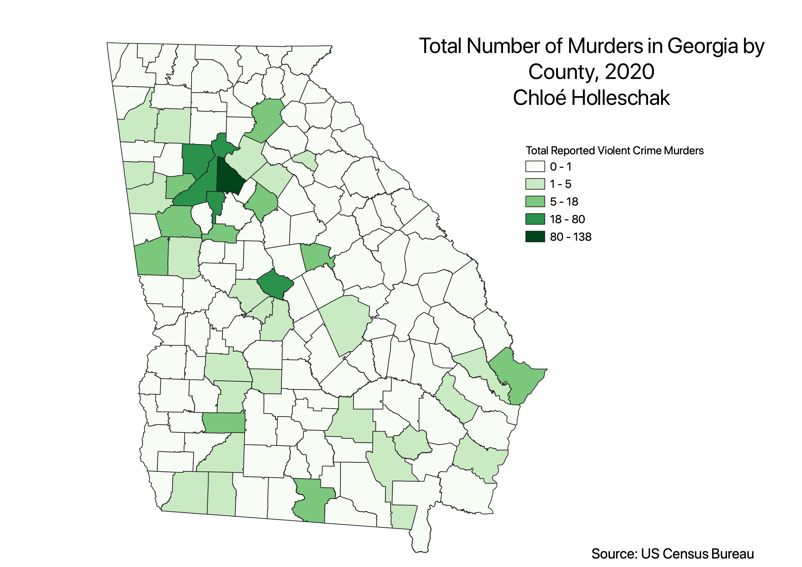
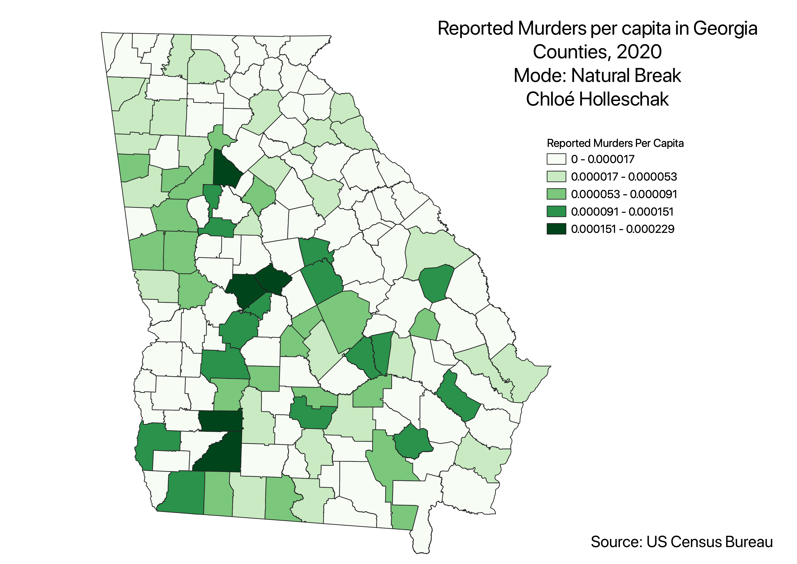
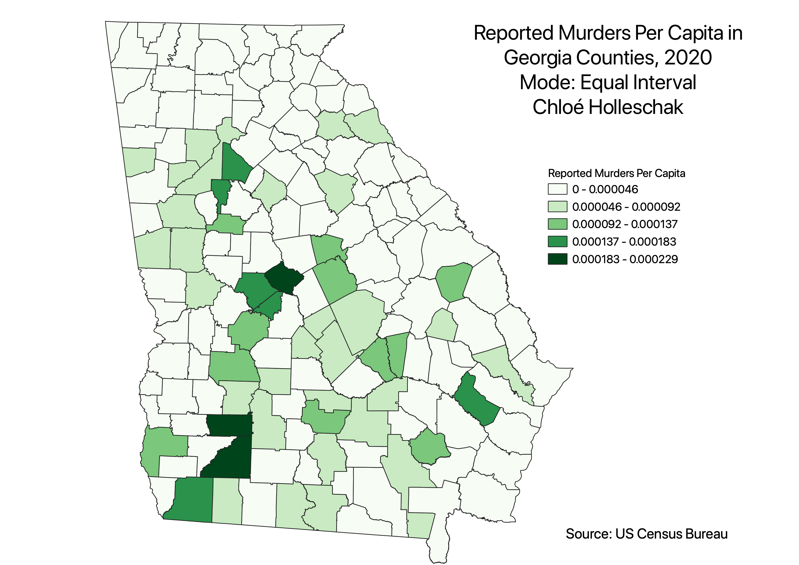
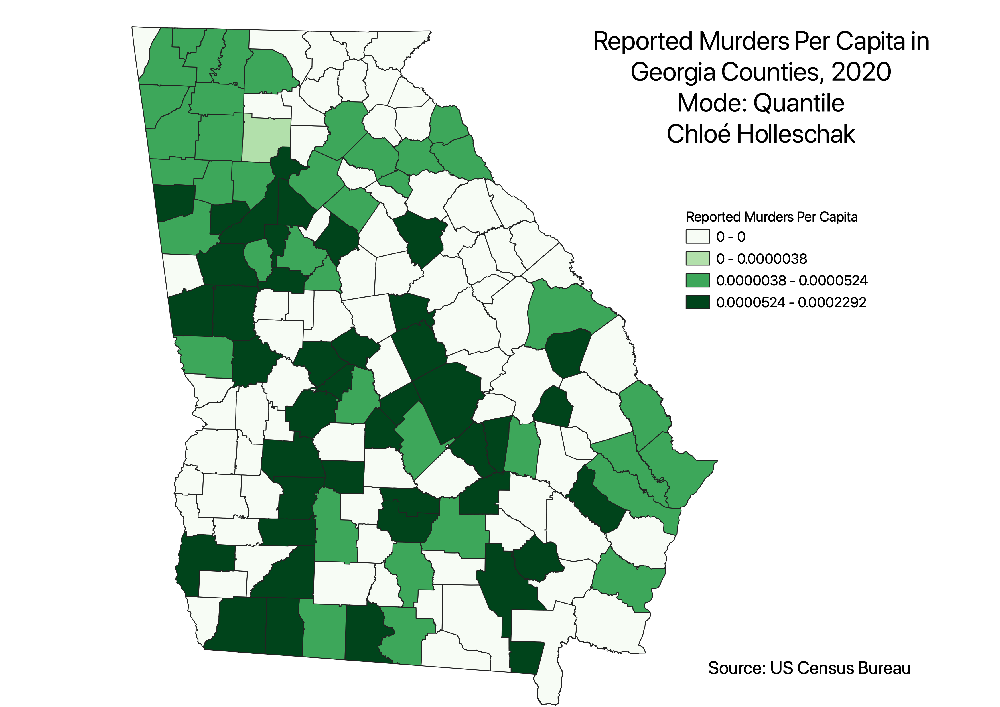

Welcome to HW 6: Census Data Choropleth
Below are 3 PNGs of HW6, as well as the CSV file used and the shapefile.

The above map depicts total amount of reported murders in Georgia by county in 2020. This data does not have a ratio, and is classified using Natural Breaks.
The following three maps show the reported murders per capita, factoring in the population in each county.
This ratio is used to determine whether population affects the amount of murders or not.
The first classification used is Natural Breaks, QGIS generates classes based on natural groupings in the data.
Pros: Less variance within each class, best used with unevenly distributed data
Cons: Not reccomended for data with low variance
The second classification used is Equal Interval, QGIS divides the attributes into equal ranges based on the data.
Pros: used for Percentages or Temperature
Cons: Can incorrectly emphasize the amount of data in one attribute compared to another
The third classification used is Quantile, QGIS puts approximately the same amount of features in each class.
Pros: Good for displaying rankings!
Cons: As seen in my Murder Map, the data is falsely skewed to look like murder rates are super high in Georgia.



Data used for this project
Cleaned Census CSV
Data used for this project
Georgia Basemap Shapefile